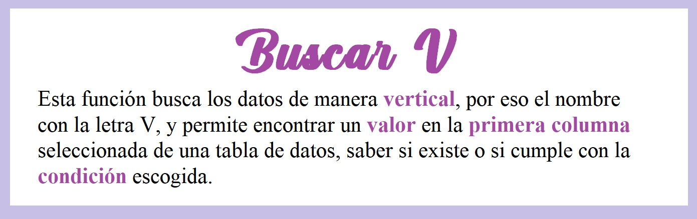
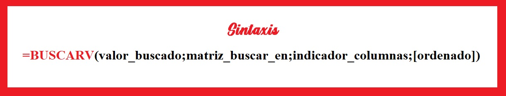
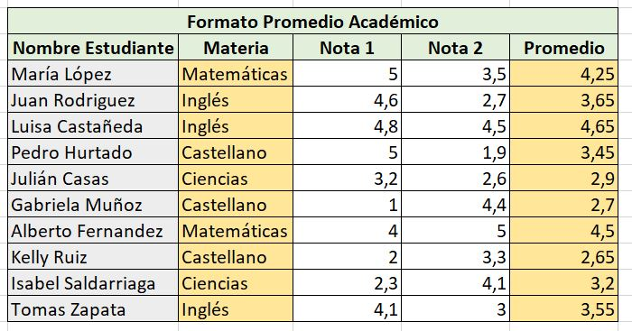
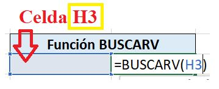
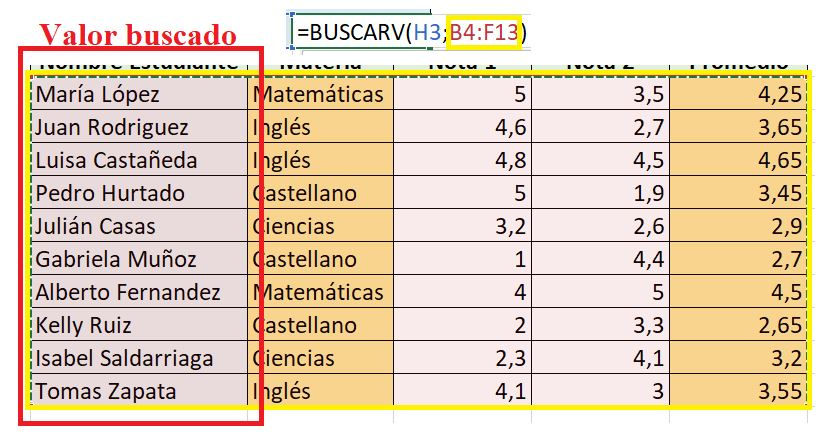
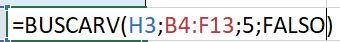

Una de las funciones mas útiles en Excel es BUSCARV, aún más cuando la cantidad de datos es muy grande. Pasa el cursor por los botones y veamos por qué:
¿Qué es?
Sintaxis
Vamos a realizar un ejemplo para entender mejor el uso de sus parámetros:
Primero llenamos una tabla y la organizamos separando los datos, como lo vemos a continuación:
En esta función queremos buscar en la tabla el promedio de un estudiante a partir de su nombre. Asi que, iniciamos la función siguiendo los pasos:
PASO 1
Parametro 1: Valor buscado
Ingresamos el valor que vamos a buscar, una celda o directamente el valor. En este caso, como el valor a buscar puede variar, vamos a seleccionar una celda vacía.
PASO 2
Parametro 2: Matriz buscar en
Sleccionamos la tabla con los datos, teniendo en cuenta que la primera columna debe ser donde se encuentra el valor buscado.
PASO 3
Parametro 3: Indicador columnas
Ingresamos un número entero, que nos indica en que columna está el valor que queremos que el programa busque. Como queremos saber cuál es el promedio, a partir de la columna 1, el promedio se encuentra en la columna 5, así que ingresamos un "5".

PASO 4
Parametro 4:Ordenado
Finalmente, ingresamos la coincidencia. Seguramente es mucho mejor un resultado exacto, así que es recomendable ingresar coincidencia exacta "FALSO", en vez de aproximada "VERDADERO."
PASO 5